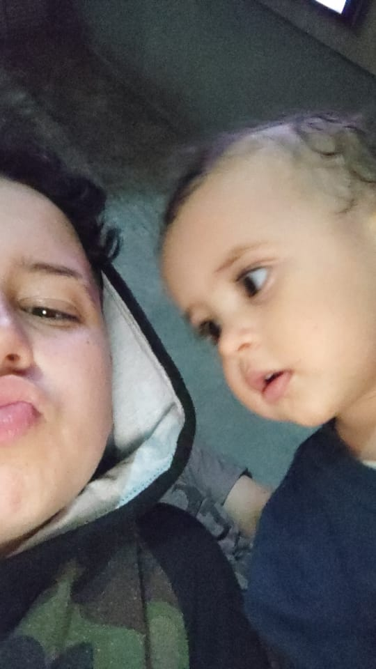
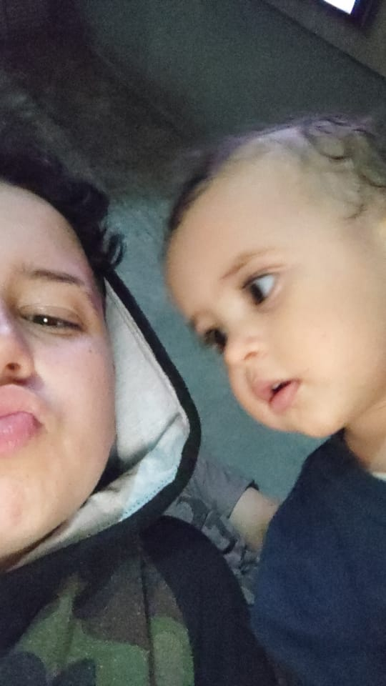
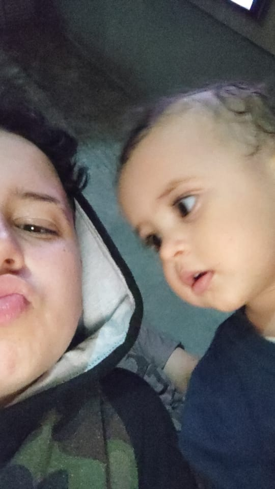

Olá, meu nome é Enzo Gabriel, nasci em 15 de setembro no ano de 2004, e dono da EGWorld, eu sou um garoto um tanto sonhador quanto planejador, dependendo da situação gosto de planejar bem tudo e ter todo o cuidado para sair certo como eu esperava. (caso queira saber mais sobre a EGWorld basta clicar nesse )
Estilo de filmes e séries
Tenho um gosto um tanto variado para isto, eu admiro muito filmes de terror, porém se eu for assistir sozinho vou virar um medroso completo porém se for com alguém crio uma coragem inexplicavél, eu não curto muito filmes romanticos ou musicais porém se eu acabar tendo curiosidade sobre algum filme desses generos eu com certeza vou assistir até o final (mas High Scool Musical é perfeito e ai de quem diga ao contrário).
Vida escolar
No caso da minha vida escolar.. bom, eu estou indo bem, na verdade estou indo melhor do que eu esperava, nas aulas EAD eu não conseguia acompanhar muito bem, era difícil prestar atenção então achei que quando começasse o presencial eu iria me dar mal, mas não foi bem assim.
Familia e amigos
Pra mim amigos e familia tem algo em comum, tu só pode considerar uma pessoas um deles dependendo da confortabilidade, se tu não se sente confortável com alguém não pode considerar o mesmo da familia ou como um amigo, certamente essa pessoas é considerada por ti como uma conhecida ou uma pessoa indesejavel, indo nessa base: pra mim familia são as pessoas que eu me sinto confortavel e sei que posso confiar ao máximo, amigos são pessoas com quem me sinto confortável e sei que posso contar pra quando der e vier. Caso ao contrário tu não é nada pra mim.

Aspirações
Sonhos envolvendo carreira vou contar logo a baixo, aqui irei contar sobre meus sonhos de vida. meu sonho é ter minha familia obviamente, minha mulher, meus filhos e meus animais, sonho em morar lá para os estadso unidos, isso pode parecer um tanto sonhador demais ou até meio "cringe" mas eu vou fazer de tudo para realizar meus sonhos.
Plano de carreira
Meu plano é seguir na área de programação, pretendo ficar extremamente ótimo nessa área e realizar meu sonho de carreira que é fazer minha própria marca e eu VOU! fazer minha própria marca e EGWorld vai ser um marca famosa, grave minhas palavras!.
Qualidaes e Defeitos
Ok lá vamos estamos numa das partes mais difíceis da auto descrição, a parte de qualidades e defeitos, posso dizer que uma das minhas maiores qualidades é que quando eu ponho algo na minha cabeça, eu vou até o fim, e defeito.. bom eu posso dizer que o meu defeito é me auto punir, no caso quando eu estou focado em algo que não está dando certo, não irei descansar direito até conseguir o resultado que eu quero.
Esporte e Lazer
Eu não sou muito de praticar esportes portanto acredito que as minhas atividades de lazer sejam programar, ouvir música, cozinha, cantar e assistir TV,
 
